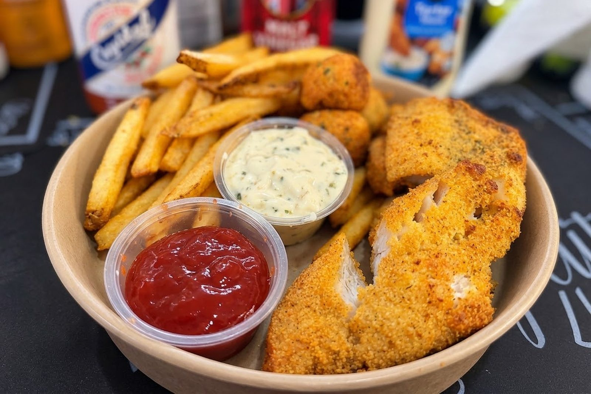

Nothing Takes Root in Lake Chabot
Recipe
The catfish in Lake Chabot did not swim there. Someone brought them in a truck, in the summer, and put them in the water so I could take them back out.
I have known that for years, but never really thought about it. That knowledge sat somewhere behind the actual business of the morning, the drive out to Castro Valley, the permit, the walk down to the water, the neighbors already set up and giving me a hard time for being late. You don't stand on a bank at seven in the morning thinking about supply chains. That is the whole appeal.
Fishing at Chabot costs more than the permit. There is a state license first of $64 for residents per year, $21 if you only want a day pass, and then $5 to the District on top for the permit, and it is that $5 that has anything to do with the fish in front of you. The rest goes to Sacramento. The District says plainly on its own pages that permit revenue is what lets it stock trout and catfish. What I assumed, and what turns out not to be true, is that this closes into a neat circle. In 2013, the last year I could find the local figures broken out, Chabot took in something over $65,000 in fishing permit revenue, and the District spent something over $102,000 stocking the lake with fish. Permits covered roughly two thirds. Somebody else covered the rest.
Which makes it not a transaction but an amenity. The $5 buys most of a fish and the remainder is absorbed, the way a city absorbs the cost of a public swimming pool. The recreation is priced below what it costs to supply. That is a stranger thing to sit inside than the tidy version I had, and it is harder to feel clever about.
The fish are not from here either, in a larger sense. Channel catfish are not native to California. The species arrived through human stocking, like almost everything else in that reservoir worth catching. The catfish arrive by contract. The District puts the work out to bid and buys the fish by the pound, up to forty thousand pounds a year across its lakes, delivered roughly weekly in loads of two or three thousand, June through September. The specification runs by weight class. Seventy percent of the fish are to weigh between a pound and a half and two pounds. Twenty percent between two and a half and four. Ten percent from four and a half up past eight. That is what a purchase order for a living animal looks like, and I do not think I had ever pictured one.
The District calls it planting. That is the word in the reports, in the schedules, on the page where you buy the permit, and the trout are described as catchable, which is the other word worth sitting with. Planting is what you do to a field you mean to come back to. It makes the business sound agricultural rather than commercial, which at the margins I suppose it is. But nothing takes root in Lake Chabot. Most of the fish arrive under two pounds and leave in a cooler by August.
The bass are a different matter. Nobody plants them. In its 2013 fisheries report the District put the adult largemouth population in Honker Bay at roughly five hundred fish (adult meaning over eleven inches) and described it as fairly stable since 2008. I have not found a newer estimate, so treat that as the last good look rather than today's count. The District tags them, asks you to phone in the number if you catch one, and then asks you to put the fish back into the water. The only population in that lake sustaining itself is the one I am not supposed to keep. The delivered fish is dinner.
The lake's largest catfish caught on record is thirty-five pounds, thirty-nine inches, caught by George Goveia in 1981. Nothing has passed its size since. Forty-five years of weekly deliveries at a pound and a half a fish, and the biggest catfish anyone has pulled out of Chabot went in before the current program did, if it went in at all. I know that because a lake manager mentioned it to a local paper in 2013, in passing, while talking about a different fish. He is not there anymore. I asked at the marina and got a shrug and a laugh, not unkind, just genuine surprise that anyone would want to know. Which is fair. I had not wanted to know either, for years.
None of it is hidden. The contract is a public bid document. The delivery schedule is on their website. The record ran in the newspaper. It is all sitting there, and the man selling the permits has never been asked, because nobody asks.
The overall record is a sturgeon. Forty-five pounds, taken in 2013 on trout bait, which is not what you use for sturgeon. The lake manager said the last one before it came out in 1995, with a few in the early nineties and nothing in between. Nobody stocks sturgeon in Chabot. Nobody can say how they got there.
So the lake holds three kinds of fish. The ones purchased by weight class and delivered on a schedule. The bass, which live there and which I am asked to put back. And whatever the sturgeon are, arriving by a route nobody has ever been able to name, in a reservoir with a fence around it.
I had assumed Lake Victoria was the honest version. Mostly it is. African catfish live there on their own terms. In Dholuo it is mumi. It is one of the wild Kenyan stocks researchers sample when they want to know what the species looks like before people get hold of it. But the fish that pays in Lake Victoria was put there too. The Nile perch is not from that lake. It arrived from the Lake Albert system in the middle of the 1950s, carried in quietly by men who were not supposed to be doing it and against the objections of the scientists whose job it was to advise on exactly that question, with official introductions following in the next decade. Historians who have gone back through it disagree about the particulars, which is its own kind of answer. Chabot posts its stockings publicly, five hundred pounds of catfish today, come and get it, and I still managed to fish there for years without once thinking about where the fish came from. Being told plainly turns out not to be the same as knowing.
There are hatcheries in Kenya raising catfish too, seed moved west by road, which by now I recognize as a pattern. Much of it is not raised to be eaten. It is raised as live bait for the Nile perch longlines, and Nile perch is an export fish. It leaves as fillets, some flown out fresh, more of it frozen and sent the slower way, to Europe and beyond. The catfish goes on the hook to reach the fish that goes on the plane.
So the same animal sits at opposite ends of two hierarchies. There it is what you spend. Here it is what people drive out for, the whole reason the permit exists, the thing they will sit in the cold for. Nothing about the fish changed between the two lakes. What changed is what the water is for.
I have not fished Chabot in years. What I cooked today came from a neighbor who had been out there about a month ago and turned up at my door with more than he could use, the way people do, and most of it went into the freezer and stayed there until I had a reason to take it out. The reason was this piece. I thawed a fillet because I was writing about where it came from, which is a strange way to arrive at dinner.
Buttermilk, hot sauce, salt, an hour in the fridge. Cornmeal and flour, paprika, garlic, a little cayenne. Oil to 350. It came out gold and I ate it at the counter before the crust could go soft.
It was good, and that is the part I cannot get around. Knowing the contract did not make it taste like less. The fish did not care that it had been bought by the pound in a weight class, trucked to Castro Valley, caught by somebody else, and left in my freezer for a month. It behaved in the pan the way a catfish behaves in a pan, and it fed me.
What I am left with is not guilt. It is just the length of the chain. A purchase order, a hatchery, a truck, a lake with a fence around it, a neighbor with a full cooler, a freezer, a skillet. Somewhere in there I had assumed there was a man and a fish and a morning.
In Kisumu the fish will come in on a boat, from a lake nobody had to fill. I do not know yet what I will find out about that. I suspect it will be longer than it looks, because it always is, and because the version in my head is the one I have never checked.
Here is how I cook it.
Crispy Fried Catfish
There is nothing complicated about fried catfish, but there is plenty of room to get it wrong. The crust needs to be crisp without becoming hard, the fish needs to stay moist, and the oil needs to be hot enough to fry rather than soak into the cornmeal.
I deep-fry mine, but a skillet is what most people have, so that is what the timings below assume. Catfish fillets also vary considerably in thickness, and a thick fillet cooks differently from a thin one. Use the timing as a starting point and let the fish and the oil tell you when they are ready. This recipe serves 4.
The Catfish and Marinade
- 4 catfish fillets, about 6–8 ounces each
- 1½ cups buttermilk
- 1 tablespoon hot sauce
- 1 teaspoon kosher salt
The Coating
- 1½ cups yellow cornmeal
- ½ cup all-purpose flour
- 1½ teaspoons kosher salt
- 1 teaspoon black pepper
- 1 teaspoon paprika
- 1 teaspoon garlic powder
- ½ teaspoon onion powder
- ½ teaspoon cayenne, optional
- ½ teaspoon Cajun seasoning or Old Bay, optional
For Frying
- Peanut, canola, or vegetable oil
- Oil temperature: 350°F
Instructions
- Combine the buttermilk, hot sauce, and salt in a shallow dish. Add the catfish and turn the fillets to coat. Cover and refrigerate for 30–60 minutes. Do not leave the fish swimming in the buttermilk all day — you want the soak to season the surface and give the coating something to cling to, not turn the exterior soft.
- Whisk the cornmeal, flour, salt, pepper, paprika, garlic powder, onion powder, and optional cayenne and Cajun seasoning together in a wide dish. The cornmeal provides the characteristic crunch. The flour helps the coating hold together instead of behaving like loose grit.
- Lift each fillet from the buttermilk and let the excess drip away. Press the fish firmly into the cornmeal mixture, making sure the entire surface is covered. Shake off only the loose excess.
- For crisper fish, make a second pass back through the buttermilk and then the cornmeal. It does wonders, and it is what I do at home. In a skillet, though, it is more likely to shed loose breading into the oil, so if you are shallow frying, a firmly pressed single coat is the safer bet.
- Pour about 1½ to 2 inches of oil into a heavy skillet and heat to 350°F. Do not judge the temperature by how quickly a piece of coating sizzles. Use a thermometer. And do not assume the oil will stay at 350°F once the fish goes in.
- Carefully lower the catfish into the oil, working in batches. Four cold fillets entering the pan at once pull the oil temperature down, and frying in batches gives you much better control than cramming four large fillets into a small skillet. Give the oil time to return toward 350°F before starting the next batch.
- Fry until the underside is deeply golden and crisp, then turn carefully. For fillets around 6 to 8 ounces, 3 to 5 minutes per side is a starting range, not a promise. Thin fillets may finish sooner, while thick fillets take longer.
- The real finish line is the center of the fish. Cook until the thickest part reaches 145°F. A crust can reach a beautiful golden-brown color before the center is finished. If the breading is darkening too quickly while the center is still cool, the oil is too hot. If the fish is taking forever to color and the crust feels greasy, the oil has fallen too low.
- Transfer the finished catfish to a wire rack set over a sheet pan. Season lightly with salt while it is still hot. Do not stack the fillets or bury them under paper towels — the trapped steam softens the crust you have just spent all that time creating.
Cook's Notes
The goal is not simply crispy catfish. It is a crust that stays crisp long enough to reach the table while the fish inside stays moist.
Watch the thickness. Two fillets can weigh the same and cook very differently if one is twice as thick. That is why the 3 to 5 minute timing is a guide rather than a rule.
Watch the oil. Starting at 350°F matters, but recovery matters just as much.
The frozen fish I cooked for this piece had been in the freezer for about a month. Thawed fillets carry a little more water and sit slightly softer than fresh, so dry them well before the buttermilk bath and expect the coating to need a firmer press.
Serve immediately with lemon, hot sauce, fries, or hush puppies.
— Chef Dumela